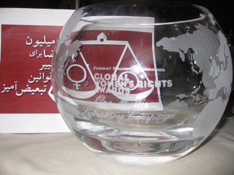

|
|
اهدای جایزه سراسری حقوق زنان به کمپین یک میلیون امضا، بنیاد فمینیست مجوریتی
شنبه12 اردیبهشت 1388
کمپین کالیفرنیا- برنامه اهدای جایزه سراسری حقوق زنان روز ۴ شنبه ۲۹ آپریل در شهر لس آنجلس کالیفرنیا برگزار شد. در این برنامه بنیاد غیردولتی «فمینیست مجوریتی» از کمپین یک میلیون امضا به همراه افراد برجسته دیگری که در زمینه حقوق زنان فعالیت نموده اند قدردانی به عمل آورد

در این برنامه خانم دلورس هورتا، فعال حقوق زنان و کارگران، به معرفی کوتاهی از کمپین یک میلیون امضا پرداخت. وی به تلاش فعالان کمپین در به دست آوردن حقوق برابر و به هزینه هایی که زنان ایرانی در این راه می پردازند اشاره کرد، از جمله خانم عالیه اقدام دوست که در حال سپری کردن حکم سه ساله زندان می باشد. خانم هورتا که خود تا کنون ۲۲ بار توسط پلیس آمریکا به خاطر شرکت در تجمع و اعتصاب های مدنی دستگیر شده است، از استقامت فعالان کمپین با وجود فشارها به عنوان الگویی برای کلیه حاضرین نام برد. خانم هورتا هنگام اهدای جایزه سراسری حقوق زنان از تمامی فعالین کمپین حاضر در برنامه دعوت نمود تا از جای خود برخیزند. روجا بندری و یاسمین منوچهری، دو نفر از فعالین کمپین در کالیفرنیا، گوی بلورین تقدیر که اسم کمپین بر آن حک شده بود را از خانم هورتا دریافت کردند. روجا بندری در ابتدای سخنان خود از خانم هورتا تشکر کرد. وی اضافه کرد که خواست برابری حقوقی برای زنان ایران سابقه ای صد ساله دارد و امروز زنان ایران توانسته اند این خواسته را به یکی از مهمترین موضوعات مطرح در گفتمان عمومی جامعه تبدیل کنند. کمپین یک میلیون امضا توانسته است تعداد زیادی از افراد با دیدگاه ها و گرایش های مختلف را جهت تلاش برای به دست آوردن خواسته مشترک برابری حقوقی فعال سازد. وی در ادامه پشتیبانی و همراهی یک بنیاد مستقل غیر دولتی مانند بنیاد فمینیست مجوریتی (که هدف اجتماعی مشترکی را در کشور خود پیگیری می کند) از زنان ایران را حائز اهمیت دانست و از این بنیاد به خاطر اهدای این جایزه تشکر نمود.
در ادامه جوایز سایر افراد برجسته ای که در زمینه حقوق زنان فعالیت نموده اند اهدا شد. به زودی در مورد این برنامه گزارش مفصل تری منتشر خواهد شد